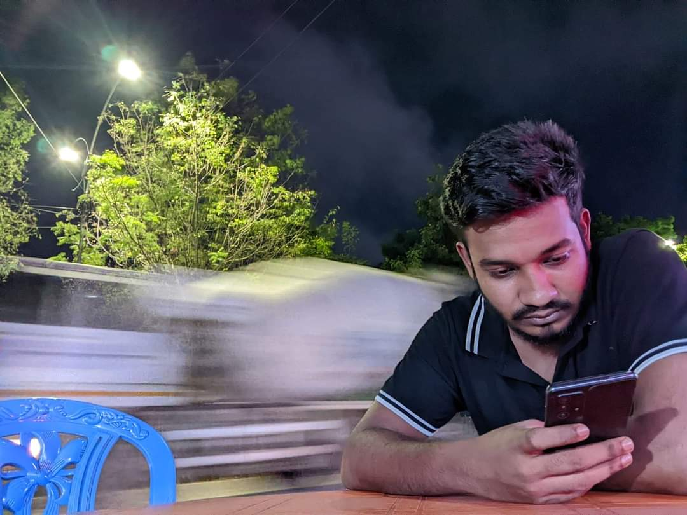
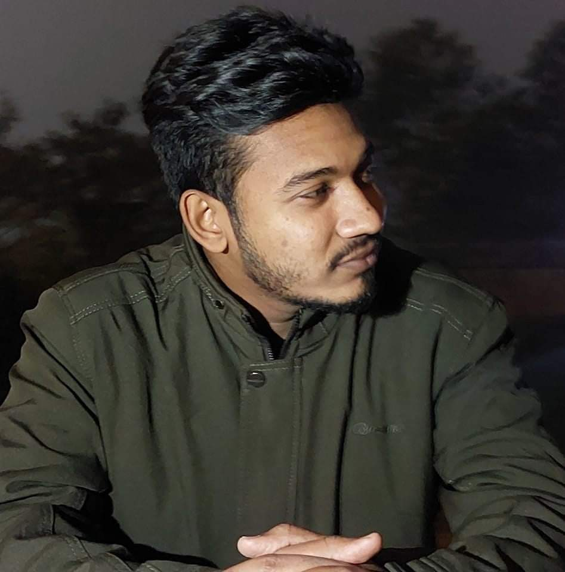
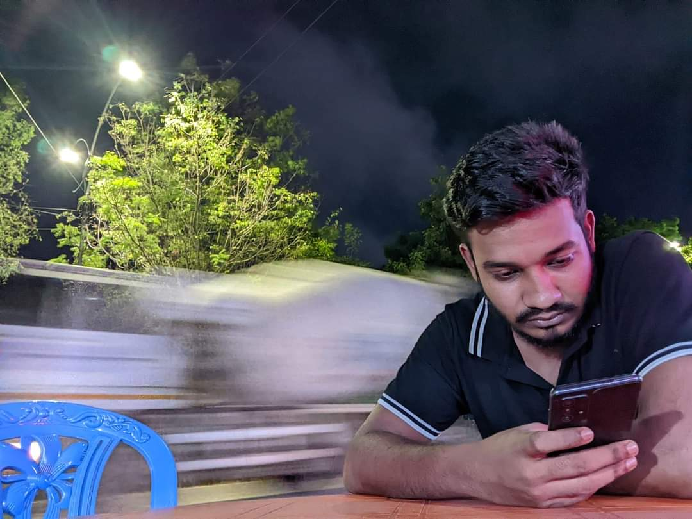
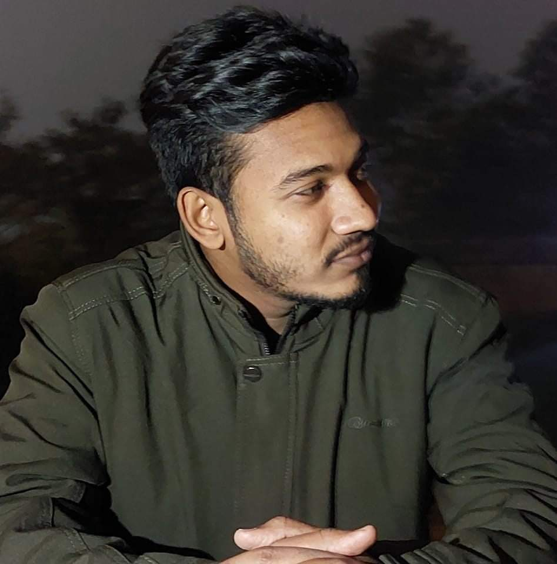
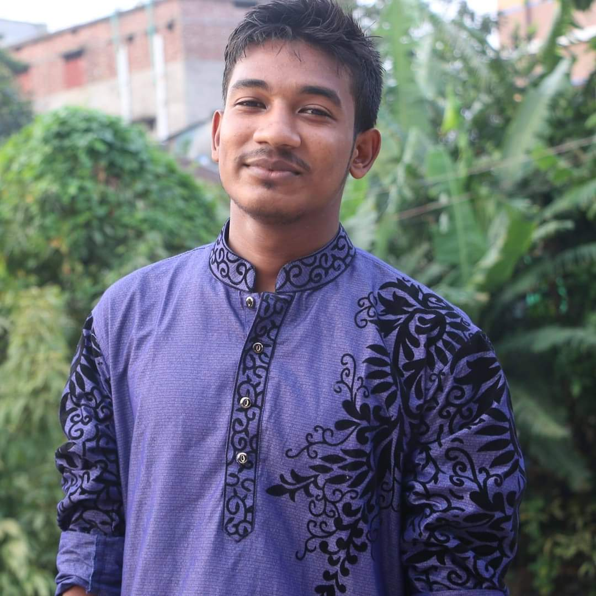
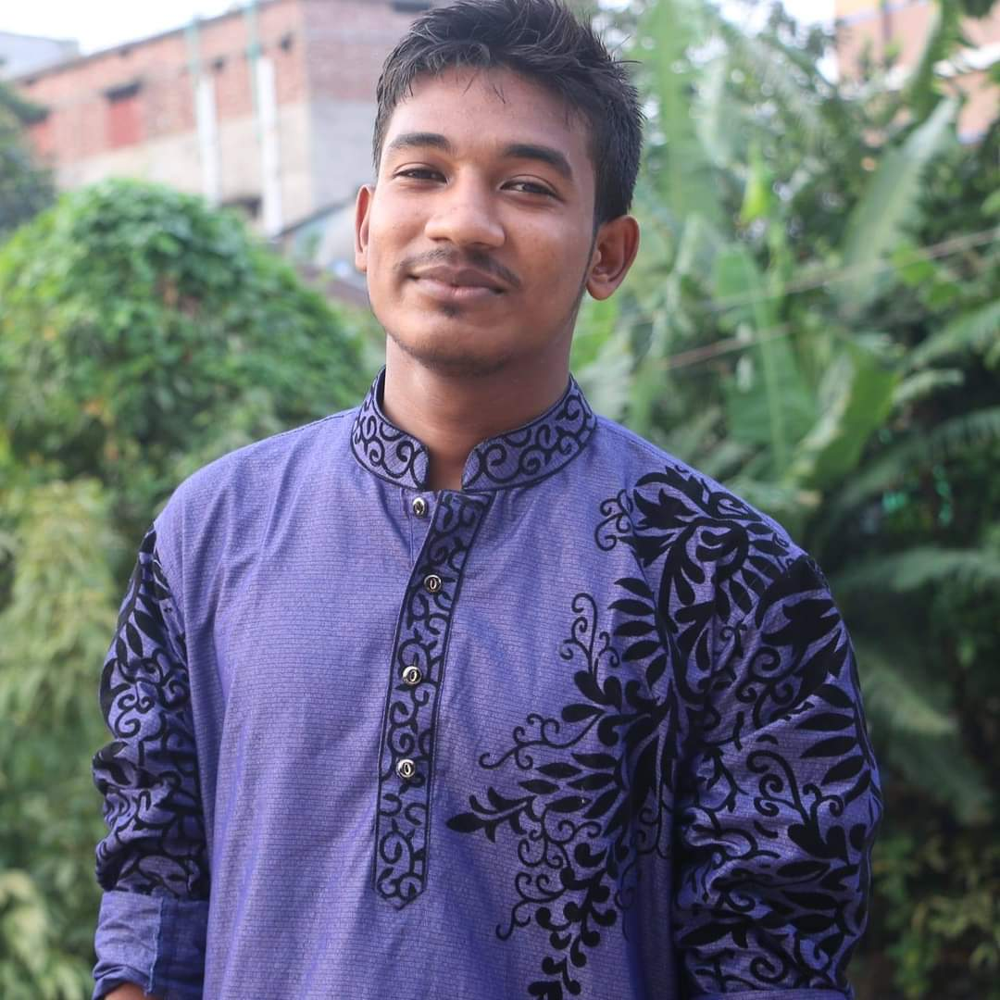

পিয়াল একজন প্রতিশ্রুতিশীল রাজনীতিবিদ ছিলেন। তার গ্রামের মানুষের জীবনমান উন্নয়নের স্বপ্ন ছিল। তিনি প্রথম নির্বাচনে অংশ নেন এবং গ্রামবাসীর সমর্থনে জয়লাভ করেন। পিয়াল তার প্রতিশ্রুতি পূরণ করতে শুরু করেন, উন্নত সড়ক, বিদ্যুৎ, ও পানির ব্যবস্থা করেন। তার নেতৃত্বে গ্রামটি সমৃদ্ধি লাভ করে এবং তিনি সবার হৃদয়ে স্থান করে নেন।
School life is the most beautiful life of human life. What is once gone can never be regained.
পিয়াল একজন সৎ ও মেধাবী ছাত্র ছিলেন। তার স্কুল জীবনের দিনগুলো ছিল অনেক কঠিন, কিন্তু শিক্ষণীয় অভিজ্ঞতায় পূর্ণ। তার জন্ম একটি ছোট গ্রামে, যেখানে তার বাবা-মা সাধারণ কৃষক ছিলেন। অর্থনৈতিকভাবে সীমাবদ্ধ হলেও, পিয়ালের বাবা-মা সবসময় তাকে শিক্ষার গুরুত্ব বোঝাতেন এবং তাকে সৎ ও পরিশ্রমী হতে শিখিয়েছিলেন। প্রথম দিন স্কুলে যাওয়ার সময় পিয়াল খুব উত্তেজিত ছিল। তার হাতে ছিল নতুন বই, খাতা, এবং পেনসিল। স্কুলে গিয়ে প্রথম ক্লাসে ঢোকার সময় সে একটু নার্ভাস ছিল, কিন্তু শিক্ষক এবং সহপাঠীদের উষ্ণ অভ্যর্থনা তাকে স্বস্তি দিয়েছিল। প্রথম দিনেই সে কিছু নতুন বন্ধু বানিয়েছিল, যারা পরবর্তীতে তার জীবনের অবিচ্ছেদ্য অংশ হয়ে যায়। প্রতিদিন পিয়াল ভোরে উঠে পড়াশোনার জন্য প্রস্তুতি নিত। সে নিজেই পড়াশোনা করত এবং তার মা তাকে পড়াশোনায় সাহায্য করতেন। স্কুলে সে ছিল একজন মনোযোগী ছাত্র, সবসময় শিক্ষক এবং সহপাঠীদের সাহায্য করত। সে গণিত এবং বিজ্ঞানে খুবই দক্ষ ছিল এবং ক্লাসে সবসময় সেরা ফলাফল করত। একদিন স্কুলে একটি বিজ্ঞান মেলা আয়োজন করা হয়েছিল। পিয়াল সেখানে একটি প্রোজেক্ট বানিয়ে অংশগ্রহণ করেছিল। তার প্রোজেক্ট ছিল একটি সৌরশক্তি চালিত গাড়ি, যা দেখে সবাই মুগ্ধ হয়েছিল। তার প্রোজেক্টটি প্রথম স্থান অধিকার করে এবং তাকে পুরস্কৃত করা হয়েছিল। সেই দিনটি পিয়ালের জীবনে একটি স্মরণীয় দিন হয়ে ওঠে। স্কুলে পিয়ালের আরেকটি প্রিয় বিষয় ছিল সাহিত্য। সে গল্প এবং কবিতা পড়তে ভালোবাসত। তার বাংলা শিক্ষিকা তাকে সবসময় নতুন বই পড়তে উৎসাহিত করতেন। পিয়াল ক্লাসের শেষে লাইব্রেরিতে গিয়ে বই পড়ত এবং নোট তৈরি করত। তার প্রিয় লেখক ছিলেন রবীন্দ্রনাথ ঠাকুর এবং কাজী নজরুল ইসলাম। পিয়ালের স্কুল জীবনে একদিন সে একজন দুঃখী সহপাঠীর সাথে দেখা করল, যার নাম ছিল রাফি। রাফি তার পড়াশোনায় ভালো ছিল না এবং প্রায়শই পরীক্ষায় খারাপ ফলাফল করত। পিয়াল রাফির পাশে বসে তাকে পড়াশোনা করাতে শুরু করল। ধীরে ধীরে রাফির ফলাফল উন্নত হতে লাগল এবং সে পরীক্ষায় ভালো করতে লাগল। রাফি পিয়ালের প্রতি কৃতজ্ঞ ছিল এবং তাদের মধ্যে গভীর বন্ধুত্ব গড়ে উঠল। পিয়ালের স্কুলে আরেকটি গুরুত্বপূর্ণ ঘটনা ছিল বার্ষিক ক্রীড়া প্রতিযোগিতা। সে দৌড়, লং জাম্প এবং ক্রিকেটে অংশগ্রহণ করত। সে সবসময় খেলাধুলায় ভালো করত এবং অনেক পদক জিতত। তার শিক্ষক এবং সহপাঠীরা তার প্রতি গর্বিত ছিল। পিয়ালের স্কুলে সমাজবিজ্ঞান ক্লাসও ছিল অনেক প্রিয়। সে তার শিক্ষকের কাছ থেকে সমাজের নানা সমস্যার সমাধান শিখত। সে জানত যে সমাজের উন্নয়নের জন্য সৎ ও পরিশ্রমী মানুষ দরকার। তার শিক্ষকের অনুপ্রেরণায় সে ভবিষ্যতে একজন সমাজকর্মী হওয়ার স্বপ্ন দেখতে শুরু করেছিল। একদিন স্কুলে একটি সমাজসেবা কার্যক্রমের আয়োজন করা হয়েছিল। পিয়াল এবং তার সহপাঠীরা গ্রামের বয়স্ক মানুষের ঘরে গিয়ে তাদের সাহায্য করেছিল। তারা তাদের ঘর পরিষ্কার করেছিল, তাদের জন্য খাবার রান্না করেছিল এবং তাদের সাথে গল্প করেছিল। পিয়াল সেই দিন বুঝতে পেরেছিল যে মানুষের জন্য কিছু করা কতটা আনন্দদায়ক হতে পারে। পিয়ালের স্কুলে সাংস্কৃতিক অনুষ্ঠানের আয়োজনও করা হত। সে গান গাইতে এবং নাটক করতে খুব ভালোবাসত। একবার স্কুলে একটি নাটক আয়োজন করা হয়েছিল, যেখানে পিয়াল প্রধান চরিত্রে অভিনয় করেছিল। তার অভিনয় দেখে সবাই মুগ্ধ হয়েছিল এবং সে অনেক প্রশংসা পেয়েছিল। পিয়ালের স্কুল জীবনে আরেকটি উল্লেখযোগ্য ঘটনা ছিল তার শিক্ষকদের সঙ্গে বন্ধুত্বপূর্ণ সম্পর্ক। তার শিক্ষকরা সবসময় তাকে ভালোবাসতেন এবং তার প্রতিভাকে বিকাশ করতে সাহায্য করতেন। পিয়াল সবসময় তাদের কথা শুনত এবং তাদের পরামর্শ মেনে চলত। তার শিক্ষকরা তাকে সৎ ও পরিশ্রমী হতে শিখিয়েছিলেন, যা তার জীবনের অন্যতম গুরুত্বপূর্ণ শিক্ষা হয়ে উঠেছিল। স্কুলের শেষ পরীক্ষায় পিয়াল খুব ভালো ফলাফল করেছিল। সে তার স্কুলের সর্বোচ্চ নম্বর পেয়ে পাশ করেছিল এবং তার শিক্ষক ও সহপাঠীরা তার প্রতি গর্বিত ছিল। পিয়ালের বাবা-মা তাকে নিয়ে খুবই খুশি ছিলেন এবং তার পরিশ্রমের জন্য তাকে শুভেচ্ছা জানিয়েছিলেন। পিয়ালের স্কুল জীবন ছিল সৎ ও পরিশ্রমের এক উজ্জ্বল উদাহরণ। সে সবসময় তার সততা ও পরিশ্রম দিয়ে মানুষের হৃদয়ে জায়গা করে নিয়েছিল। তার স্কুল জীবনের শিক্ষা ও অভিজ্ঞতা তাকে একজন সফল মানুষ হতে সাহায্য করেছিল। স্কুল জীবন থেকে সে শিখেছিল যে সততা ও পরিশ্রমের মাধ্যমে সবকিছু অর্জন করা সম্ভব, এবং এই শিক্ষা তার জীবনের প্রতিটি ক্ষেত্রে তাকে পথ দেখিয়েছিল।
To achieve success we must work hard. Those who have reached the pinnacle of success must be working hard
পিয়াল একজন প্রতিশ্রুতিশীল রাজনীতিবিদ, যিনি মানুষের সেবায় নিজেকে উৎসর্গ করেছেন। ছোটবেলা থেকেই তিনি মানুষের প্রতি গভীর মমতা ও সহানুভূতি পোষণ করতেন। তার গ্রাম ছিল অত্যন্ত দরিদ্র এবং প্রাথমিক সুবিধাসমূহের অভাব ছিল। পিয়ালের বাবা-মা তাকে সৎ ও পরিশ্রমী হতে শিখিয়েছিলেন, যা তার রাজনৈতিক জীবনের মূলমন্ত্র হয়ে উঠেছিল। পিয়াল তার শিক্ষা জীবন শেষ করে গ্রামে ফিরে আসেন এবং সেখানে সমাজসেবামূলক কাজ শুরু করেন। তিনি দেখলেন, গ্রামের মানুষের অনেক সমস্যার সমাধান করা জরুরি। পিয়াল প্রথমে একটি ছোট গ্রুপ তৈরি করেন, যাদের সাথে তিনি মিলে বিভিন্ন সমস্যার সমাধান করতে শুরু করেন। তারা গ্রামের মানুষের জন্য বিশুদ্ধ পানির ব্যবস্থা করেন, নতুন সড়ক নির্মাণ করেন এবং বিদ্যুতায়নের উদ্যোগ নেন। একদিন, গ্রামের একটি স্কুলে পিয়াল গিয়ে দেখেন যে, শিক্ষার্থীদের পড়ার জন্য পর্যাপ্ত বই-পত্র নেই। তিনি সাথে সাথে ব্যবস্থা নেন এবং এলাকার শিক্ষার্থীদের জন্য নতুন বই ও অন্যান্য শিক্ষাসামগ্রী সরবরাহ করেন। তার এই উদ্যোগে গ্রামের শিক্ষার্থীরা অত্যন্ত খুশি হয় এবং তারা আরও মনোযোগ সহকারে পড়াশোনা করতে শুরু করে। পিয়াল তার এলাকার স্বাস্থ্য সেবার উন্নতির জন্যও কাজ শুরু করেন। তিনি একটি ছোট ক্লিনিক স্থাপন করেন এবং সেখানে একজন দক্ষ ডাক্তার নিয়োগ করেন। গ্রামের মানুষ প্রাথমিক চিকিৎসা সেবা পেতে শুরু করে এবং তাদের স্বাস্থ্য সুরক্ষিত থাকে। পিয়াল তার ক্লিনিকে প্রয়োজনীয় ঔষধ সরবরাহ নিশ্চিত করেন এবং সবার জন্য বিনামূল্যে চিকিৎসা সেবার ব্যবস্থা করেন। পিয়ালের নেতৃত্বে গ্রামে একটি কৃষি সমবায় গঠন করা হয়, যেখানে গ্রামের কৃষকরা মিলে নিজেদের উৎপাদিত পণ্য বাজারজাত করে। এভাবে কৃষকরা ন্যায্য মূল্য পায় এবং তাদের জীবনমান উন্নত হয়। পিয়াল কৃষকদের জন্য উন্নত বীজ, সার ও কৃষি প্রযুক্তি সরবরাহ করেন, যাতে তারা অধিক ফলন পেতে পারে। গ্রামে নারীদের অবস্থার উন্নতির জন্য পিয়াল বিশেষ উদ্যোগ নেন। তিনি নারীদের জন্য সেলাই প্রশিক্ষণ কেন্দ্র স্থাপন করেন, যেখানে তারা সেলাই কাজ শিখে আয় করতে পারে। এছাড়া, তিনি নারীদের জন্য স্বনির্ভর গোষ্ঠী তৈরি করেন, যাতে তারা একে অপরকে সহায়তা করতে পারে। নারীরা আর্থিকভাবে স্বাধীন হয়ে ওঠে এবং তাদের সম্মান বৃদ্ধি পায়। পিয়াল বুঝতে পারেন, তরুণ প্রজন্মের উন্নতির জন্য ক্রীড়া ও সংস্কৃতি চর্চার প্রয়োজন। তিনি গ্রামের যুবকদের জন্য একটি ক্রীড়া ক্লাব গঠন করেন, যেখানে তারা ফুটবল, ক্রিকেট ও অন্যান্য খেলাধুলায় অংশ নিতে পারে। তিনি একটি লাইব্রেরি স্থাপন করেন, যেখানে তরুণরা বিভিন্ন বই পড়তে পারে এবং নিজেদের জ্ঞান বৃদ্ধি করতে পারে। এছাড়া, তিনি বিভিন্ন সাংস্কৃতিক অনুষ্ঠান আয়োজন করেন, যেখানে গ্রামের সবাই অংশগ্রহণ করে এবং নিজেদের প্রতিভা প্রদর্শন করে। একদিন গ্রামে একটি বড় দুর্যোগ আসে। বন্যার কারণে গ্রামের অনেক ঘরবাড়ি ক্ষতিগ্রস্ত হয় এবং মানুষ নিঃস্ব হয়ে পড়ে। পিয়াল তখন দুর্যোগ মোকাবিলায় সক্রিয় হন এবং ত্রাণ কার্যক্রম শুরু করেন। তিনি খাদ্য, পোশাক ও অন্যান্য জরুরি সামগ্রী সরবরাহ করেন এবং গ্রামের মানুষের পাশে দাঁড়ান। তার এই তৎপরতা গ্রামের মানুষের মনে গভীর প্রভাব ফেলে এবং তারা পিয়ালকে তাদের ত্রাণকর্তা হিসেবে দেখে। পিয়াল তার রাজনৈতিক জীবনে কখনো দুর্নীতি বা অসততায় লিপ্ত হননি। তিনি সবসময় সৎ পথে থেকে মানুষের সেবা করে গেছেন। তার সততা ও নিষ্ঠা তাকে সবার কাছে একজন সম্মানিত ব্যক্তি হিসেবে প্রতিষ্ঠিত করে। পিয়াল বিশ্বাস করেন, সত্যিকারের রাজনীতিবিদ হলেন সেই ব্যক্তি, যিনি মানুষের সেবা করতে পারেন এবং তাদের জীবনমান উন্নত করতে পারেন। তার নেতৃত্বে গ্রামে একটি উন্নয়নের জোয়ার আসে। পিয়াল সবসময় জনগণের মতামতকে গুরুত্ব দেন এবং তাদের সমস্যা শুনে সমাধান করেন। তিনি গ্রামের মানুষের আস্থা অর্জন করেন এবং তারা তাকে তাদের প্রতিনিধি হিসেবে নির্বাচিত করে। পিয়াল তার এলাকার উন্নয়নের জন্য সরকারি সাহায্যও সংগ্রহ করেন। তিনি বিভিন্ন উন্নয়ন প্রকল্প বাস্তবায়ন করেন, যেমন গ্রামে একটি বড় হাসপাতাল নির্মাণ, আধুনিক বিদ্যালয় স্থাপন, উন্নত সড়ক নির্মাণ ইত্যাদি। তার অক্লান্ত পরিশ্রমে গ্রামটি একটি মডেল গ্রামে পরিণত হয়। পিয়ালের নেতৃত্বে গ্রামে একটি সমৃদ্ধির স্রোত বইতে থাকে। তিনি সবসময় গ্রামের মানুষের কল্যাণে কাজ করে যান এবং তাদের জন্য নতুন নতুন উদ্যোগ নেন। তার সততা, নিষ্ঠা এবং পরিশ্রম তাকে একটি আদর্শ রাজনীতিবিদ হিসেবে প্রতিষ্ঠিত করে। পিয়াল বিশ্বাস করেন, মানুষের সেবা করাই তার জীবনের মূল লক্ষ্য, এবং তিনি সেই লক্ষ্য পূরণে নিজেকে উৎসর্গ করেছেন। পিয়াল মানুষের হৃদয়ে স্থায়ীভাবে স্থান করে নেন এবং তার কাজের জন্য সবাই তাকে শ্রদ্ধা ও ভালোবাসা জানায়। তার জীবন ছিল সৎ, নিষ্ঠা ও মানবসেবার এক উজ্জ্বল দৃষ্টান্ত, যা ভবিষ্যত প্রজন্মের জন্য একটি অনুকরণীয় উদাহরণ হয়ে থাকবে।


 



 
